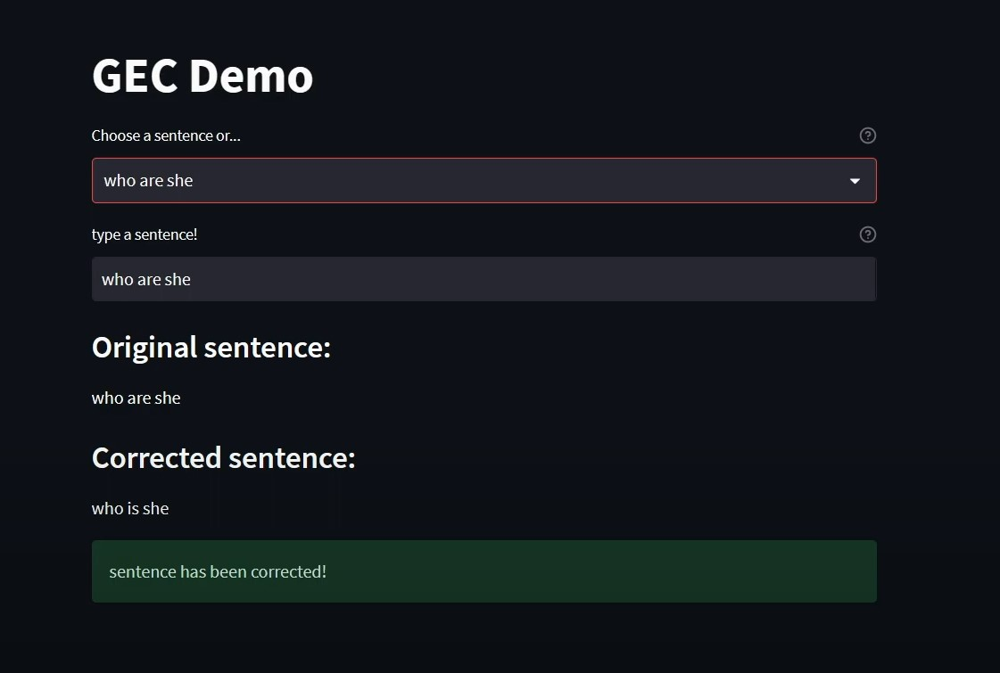
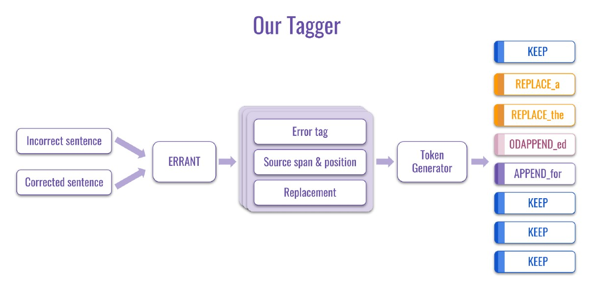
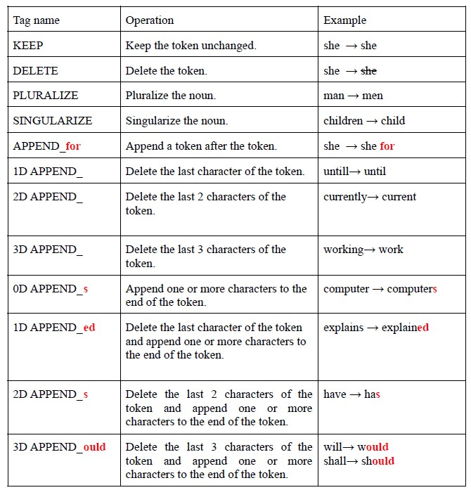
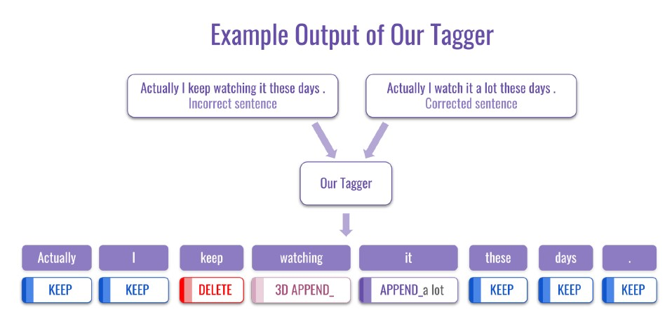
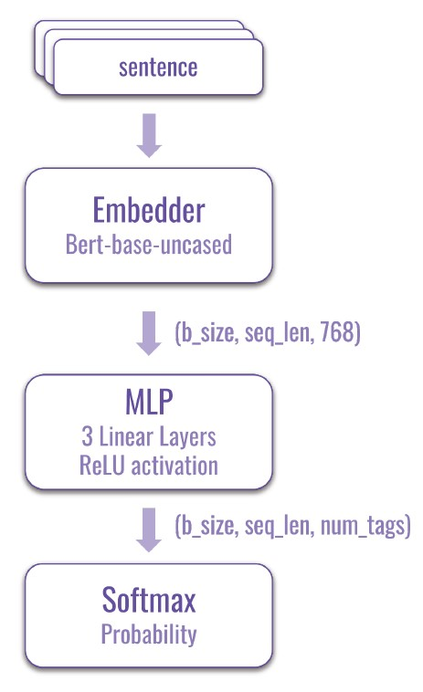

GEC tool
Introduction
GEC stands for Grammatical Error Correction, which is the task of detecting and correcting errors in written text in order to improve its grammatical correctness. It is an important area of research in natural language processing because it can help improve the quality and readability of essays written by non-native speakers and language learners, and assist teachers in evaluating the essays written by students. GEC research includes a wide variety of topics, including error detection, error classification, error correction, and evaluation of GEC systems. Numerous approaches to GEC have been proposed by the researchers and the industry, including rule-based systems, machine learning-based systems, and hybrid systems that combine both technologies. In our final project, we frame the problem of grammatical error correction as a sequence tagging problem, and use a neural network to predict an edit tag for each token in the input sentence. By doing so, our model is able to perform inference faster than traditional neural machine translation approaches that usually use a sequence-to-sequence model.
Dataset
We use NAIST Lang-8 Learner Corpora as a training and testing dataset. Lang-8 Learner is a place where language learners can practice writing in their target language and get feedback on their writing from native speakers. In each record, there is an original sentence that might contain some errors and a sentence that has been corrected if the original sentence contains one or more errors.
Method
Our own token tagger
a list of span level edit operations, which include the type of error, the location where it occurred, and the corrected content. Then we convert the output of ERRANT (span level edits) into edit tags (token level edit) through our own tag generator.
The following diagram illustrates the overall pipeline of our token tagger:
The following table below shows all possible tag types that can be generated by our tagger.

Note that red text in bold in the name of tags is changeable and is dependent on the errorful
and corrected sentence pair, which means there might be thousands or even more unique edit
tags generated by our token tagger depending on the input data.
In practice, we remove tags that appear too rarely through statistical methods to reduce the
number of possible tags that are to be predicted by the model. Eventually, we settle with 411
tags that are the most frequently used, which is able to correct 204605 out of 498359 errorful
sentences (41%) in the Lang-8 dataset.
The following diagram illustrates an example of token tags generated by our token tagger:
Network Architecture
We first employ a pre-trained BERT encoder (“bert-base-uncased” in Hugginface) to convert each of our input sentence into a set of 768-d feature vectors of the length of the number of input tokens, and pass those feature vectors to a MLP composed of 3 linear layers with ReLU activation function in between, and finally calculate the probability of each possible tag using a softmax layer. We employed categorical cross entropy on predicted tags versus ground truth tags and added L2 regularization to the parameters of the MLP weights as our loss function.
Analysis
While our correction result on the testing set is not ideal, our system is still able to successfully correct some rudimentary grammatical errors. One of possible ways to improve the accuracy of the model, in our opinion, is to pre-train our model using large-scale synthetic data such as PIE, which GECToR does. Another way to improve the model performance may be to decrease the number of token tags even further to the point where the model focuses only on error detection instead of correction, and leave the burden of error correction to a masked language model or some other module, which may yield better results.